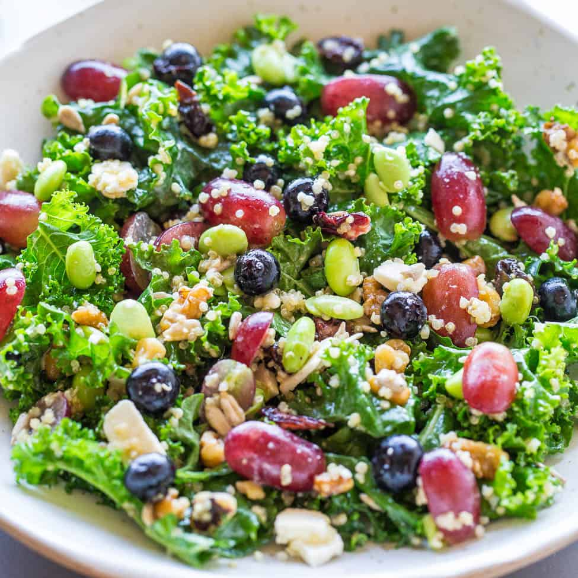

Salad Recipe

Home-made Salad
The classic Nigerian Salad recipe is a very lively salad. It is colorful, nutrient-dense, very filling and it is very tasty
Ingredients
- Lettuce
- Cabbage
- Tomato
- pasta
- Eggs
- Cucumber
- Baked Beans
- sweet corn
Steps
- pull the lettuce leaves apart, and wash and dry them well. To avoid bruising or tearing the leaves, I recommend using a salad spinner
- If you do not have a salad spinner, spread the washed lettuce on a kitchen towel to dry while you prepare the other salad components.
- After I prep my greens, I finish this recipe with thinly sliced cucumbers, avocado, shaved Parmesan, and savory roasted nuts.